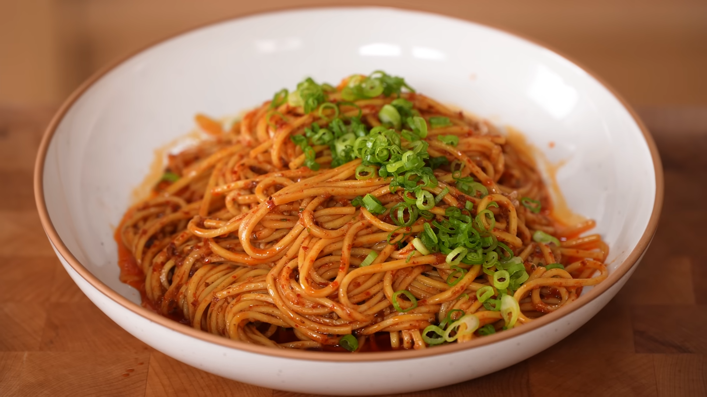

Spicy Chili Garlic Noodles

This dish is described as the perfect college meal for those tired of ramen, taking a maximum of 10 to 15 minutes to make. It offers rich umami, saltiness, spiciness, a little sweetness, and a slight crunch. It can be enjoyed by itself or with added tofu or chicken. A recipe by Joshua Weissman
Meals so Easy A College Student Could Make It
Ingredients
- Vegetable oil: 1/3 cup or 80 mL
- Chili flakes: 3 tablespoons or 25 g (of choice, e.g., Sichuan red pepper flakes or gochugaru)
- Garlic: Four cloves, grated
- Sugar: 1/2 teaspoon or 3 g
- MSG: 1/2 teaspoon or 3 g (optional, but noted as essential)
- Green onions: Two, finely chopped
- Soy sauce: 2 1/2 tablespoons or 22 g
- White distilled vinegar: 1 tablespoon or 15 g
- Lightly ground sesame seeds: 2 teaspoons or 10 g (optional)
- Cooked noodles: Any type of cooked noodle will work, avoiding pasta. Chinese wheat noodles or ramen noodles (without the spice packet) are suggested
Steps
- Prepare the Chili Oil Base: In a metal bowl (must be heat resistant, avoid plastic or glass), combine chili flakes, grated garlic, sugar, MSG (if using), finely chopped green onions, soy sauce, white distilled vinegar, and optionally, lightly ground sesame seeds. Whisk these ingredients together.
- Heat the Oil: Heat 1/3 cup or 80 mL of vegetable oil over medium heat until very hot, around 350°F (you can guess if you don't have a thermometer).
- Combine Hot Oil and Spices: Carefully pour the hot oil over the spice mixture in the metal bowl. Be cautious as it will sputter and pop violently.
- Cook Noodles: Boil your chosen noodles according to package directions. Most Chinese wheat noodles take 2 to 4 minutes. Drain them once cooked.
- Assemble: Toss the drained noodles in your prepared chili oil. Pop into a bowl and garnish with additional green onion if desired.
Back to Home